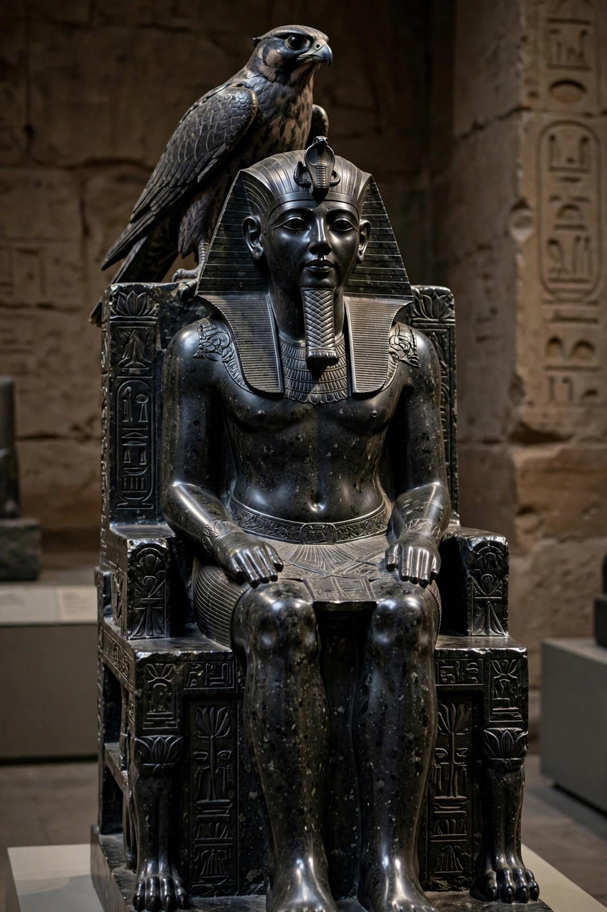

Khafre

| Khafre | |
| Reign | c. 2558–2532 BC (Fourth Dynasty) |
|---|---|
| Predecessor | Djedefre |
| Successor | Menkaure |
| Father | Khufu |
| Burial | Pyramid of Khafre, Giza |
| Monuments | Pyramid of Khafre, Great Sphinx (attributed), Valley Temple |
Khafre (also read as Khafra, Khephren or Chephren) was an ancient Egyptian pharaoh of the Fourth Dynasty during the Old Kingdom. He was the son of Khufu and the successor of Djedefre, and reigned for around 26 years in the mid-third millennium BC. Khafre built the second-largest pyramid at Giza, and his mortuary complex is the best preserved of the Old Kingdom.
- Family and reign
- The pyramid complex
- The Great Sphinx
- Statuary
Family and reign
Khafre was a son of Khufu, probably by Queen Meritites I. He came to the throne after the short reign of his half-brother Djedefre, who had built his pyramid at Abu Rawash. Little is documented of the political events of Khafre's reign; the Turin King List credits him with 26 years. His name, combining his own with that of the sun god — "Ra appears" or "appearing like Ra" — reflects the growing solar emphasis of the Fourth Dynasty court.
The pyramid complex
The Pyramid of Khafre stands on higher bedrock than Khufu's, so that although slightly smaller in original height (about 143.5 m), it often appears the taller of the two. Uniquely among the Giza pyramids it retains a section of its smooth Tura limestone casing at the summit. The complex includes a mortuary temple of massive limestone and granite blocks, a causeway, and a valley temple built of enormous monolithic granite pillars — among the finest surviving examples of Old Kingdom architecture.
The Great Sphinx
The Great Sphinx, the colossal lion-bodied statue carved from a single ridge of bedrock near the valley temple, is generally attributed to Khafre's builders, and its face is widely believed to represent the king, though the attribution remains debated among scholars.
Statuary
Khafre is famed for the life-size statue of polished diorite — a stone quarried deep in Nubia — showing the king enthroned with the Horus falcon spreading its wings behind his head, now in the Egyptian Museum in Cairo. More than twenty fragmentary statues of the king were found in his valley temple, testifying to a royal image programme of exceptional quality.
See also: Khufu; Menkaure; Egyptian pyramids; Great Sphinx of Giza.